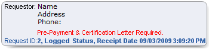

Event History form
The Event History form enables you to view events for the currently selected request. You can filter the result set with various criteria.
To open the form
- Select the Requests tab.
- Search for and select a request.
- Click View/Edit Request.
- Select the Event History function.
Note: You can also access this form after you save a new request.
Item descriptions
Note: Date and time format are controlled by the regional settings of your operating system.
Requestor information box

Identifies the requestor type, the requestor's name and demographic information, and the requirements for pre-payment and certification letters (if any). Also displays the request ID, current status, and receipt date and time.
Event
The event that triggered an entry into the event history.
Allows you to select a specific event by which to filter the event result set. Options are:
- All Events (selected by default)
- Adjustment Applied
- Adjustment Deleted
- Adjustment Modified
- Adjustment Posted
- Change of Status
- Comment Added
- Documents Released
- Documents Resent
- Invoice Closed
- Invoice Sent
- Letter Sent
- Payment Applied
- Payment Deleted
- Payment Modified
- Payment Posted
- Pre-Bill Sent
- Status Reason Added
- Write Off
Originator
The user or system actor who triggered the event.
Allows you to select a specific user by which to filter the event result set. Lists only those users who have triggered an event.
Defaults to All.
Date
Allows you to identify the date(s) by which to filter the event result set.
Options are:
- All to return all events that match the other search criteria, regardless of date
- 30 days, 60 days, or 90 days previous to the current day; returns only events that fall within the period you select and that match the other search criteria
- Custom Range to enable the From and To fields to enter a date range of your choosing
Defaults to All.
Events grid
Lists all events that match the filter criteria. Also displays the sum of events that match the filter criteria.
Read-only.
By default, sorted on Date | Time in most recent to oldest order. Can be sorted on all columns. Information includes:
- Date | Time
The date and time when the document was released. - Event
Name of the event.
Initial sort order is alphanumeric ascending. - Originator
Full name of the user who triggered the event.
Initial sort order is alphanumeric ascending. - Event Remarks
Text that describes the event.
Initial sort order is alphanumeric ascending.